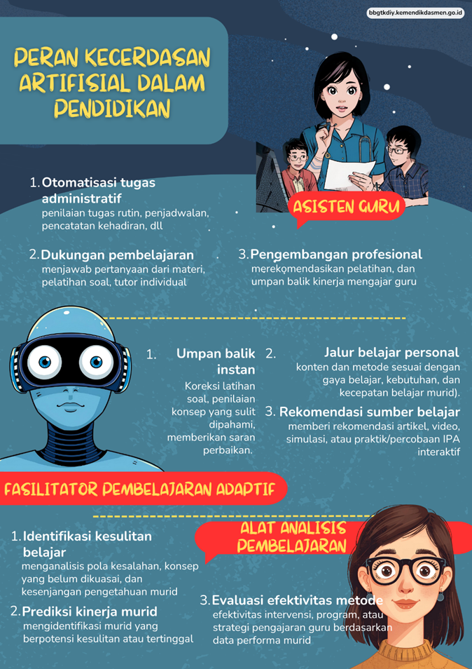
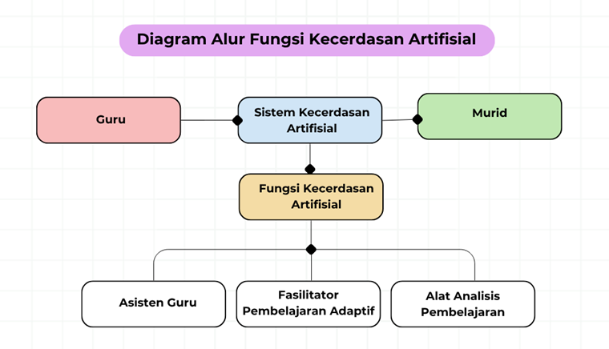

Kegiatan 1. Curah Pendapat (15 menit)
Bapak/Ibu akan memulai kegiatan dengan melihat infografis yang menampilkan peran Kecerdasan Artifisial (KA) dalam pendidikan. Infografis ini memperlihatkan bagaimana KA dapat berperan sebagai asisten guru, fasilitator pembelajaran adaptif, dan alat analisis pembelajaran.

Setelah itu, jawablah pertanyaan pemantik berikut di forum diskusi:
| “Jika Bapak/Ibu memiliki asisten berbasis KA di kelas IPA, tugas apa yang paling ingin Bapak/Ibu delegasikan?” |
Jawaban akan ditampilkan agar Bapak/Ibu dapat melihat berbagai pandangan dari peserta lain.
Kegiatan 2. Pemahaman Materi dan Diskusi (60 menit)
1. Pemahaman Materi
Bapak/Ibu akan membaca ringkasan materi di e-modul yang menjelaskan tiga fungsi utama KA dalam pendidikan, yaitu KA sebagai asisten guru, media pembelajaran adaptif, dan alat analisis hasil belajar.
Sambil membaca, amati diagram alur fungsi KA yang menggambarkan hubungan antara peran guru, murid, dan sistem KA dalam pembelajaran.

2. Diskusi Kelompok
Selanjutnya, Bapak/Ibu akan belajar mandiri atau berdiskusi dalam kelompok kecil yang beranggotakan 4–5 orang. Jawablah pertanyaan berikut:
|
Tuliskan jawaban di forum diskusi. Fasilitator akan menyoroti beberapa hasil yang menarik untuk didiskusikan bersama.
3. Pemetaan Fungsi Kecerdasan Artifisial
Setelah berdiskusi, Bapak/Ibu akan membuat peta fungsi Kecerdasan Artifisial dalam pendidikan. Gunakanlah Format Peta Fungsi KA yang tersedia di Lampiran 4. Tuliskan bagaimana KA berfungsi sebagai asisten guru, media pembelajaran adaptif, dan alat analisis pembelajaran.
Bapak/Ibu dapat membuat peta fungsi secara digital menggunakan Canva, atau platform yang lain. Setelah selesai, unggah hasil karya ke Tautan Aktivitas KB3
Kegiatan 3. Presentasi (15 menit)
Selanjutnya, 2–3 peserta akan menampilkan hasil peta fungsi KA yang telah dibuat. Fasilitator akan memberikan umpan balik singkat dan penguatan konsep mengenai bagaimana peran KA dapat membantu guru dalam menjalankan fungsi-fungsi pembelajaran tanpa menghilangkan sentuhan kemanusiaan.